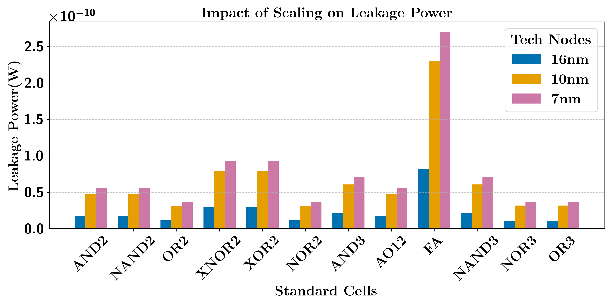

LeakEstimator
Leakage power in modern FinFET circuits shifts with PVT conditions, and simulating every condition in HSPICE is slow. LeakEstimator is a unified ML framework that predicts the leakage of digital circuits across PVT conditions at 7, 10 and 16 nm, reaching under 1% MAPE and R² above 0.99 against HSPICE.
Published at the 68th IEEE International Midwest Symposium on Circuits and Systems (MWSCAS 2025), Lansing, Michigan, USA.
